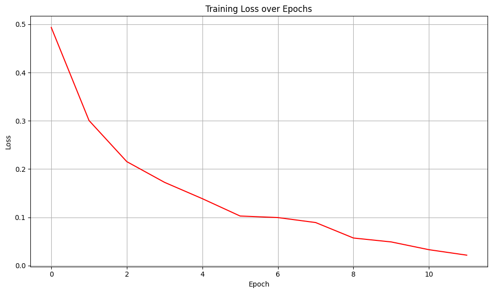

9. 记忆的进化：GRU与长期依赖问题#
9.1. 介绍#
9.2. 知识点#
9.3. 环境版本#
from util import show_version
show_version()
+------+----------------------------------------------------------------------------------------+
| Info | 《动手学人工智能》 |
+------+----------------------------------------------------------------------------------------+
| 作者 | 吾辈亦有感 |
| 哔站 | https://space.bilibili.com/3461565265217538 |
| 定位 | 基于'从零构建'的理念，用实战降低学习大模型的门槛，帮助程序员快速入门大模型。 |
| 愿景 | 若我的经验能让你的AI学习之路走的更容易一点，让你的生活变得更美好，我将倍感荣幸！祝好😄 |
+------+----------------------------------------------------------------------------------------+
环境信息：
+-------------+--------------+------------------------+
| Python 版本 | PyTorch 版本 | PyTorch Lightning 版本 |
+-------------+--------------+------------------------+
| 3.12.12 | 2.9.1 | 2.6.0 |
+-------------+--------------+------------------------+
9.4. 观察数据#
# 打开文件并读取前5行
from util import show_first_n_lines
show_first_n_lines('../dataset/shopping_comments/train.txt', 5)
| 行数 | 内容 | |
|---|---|---|
| 0 | 1 | 1\t布料一般，尺码合适，总体来说还算可以 |
| 1 | 2 | 1\t裤子收到了 质量超级好 穿起来也很正式男朋友很喜欢 |
| 2 | 3 | 0\t根本就不是纯棉的，客服还一再跟我死硬，说就是纯棉的！ |
| 3 | 4 | 0\t看着还行，可是不怎么好用 怀疑是不是假的 |
| 4 | 5 | 1\t裤子质量非常好 特别满意的一次购物 卖家服务超好 |
9.5. 自定义分词器#
如何将文字转化为计算机可以理解的数字？
如何处理长短不一的文本？
class SimpleTokenizer:
def __init__(self, pad_at_beginning=False):
"""
初始化简单分词器
"""
# 特殊token
self.pad_token = '[PAD]'
self.unk_token = '[UNK]'
self.pad_at_beginning = pad_at_beginning
# 特殊token ID
self.pad_token_id = 0
self.unk_token_id = 1
# 构建词汇表
self.vocab = {
self.pad_token: self.pad_token_id,
self.unk_token: self.unk_token_id,
}
# 反向词汇表 (id -> token)
self.ids_to_tokens = {v: k for k, v in self.vocab.items()}
# 词汇表大小
self.vocab_size = len(self.ids_to_tokens)
def build_vocab(self, texts):
"""
根据文本构建词汇表
"""
for text in texts:
words = list(text) # 将每个汉字作为独立token
for word in words:
if word not in self.vocab:
self.vocab[word] = self.vocab_size
self.ids_to_tokens[self.vocab_size] = word
self.vocab_size += 1
def build_vocab_from_file(self, file_path):
"""
从文件中构建词汇表
"""
texts = []
with open(file_path, 'r', encoding='utf-8') as f:
for line in f:
texts.append(line.strip())
self.build_vocab(texts)
def encode(self, text):
"""
将文本编码为token ids
"""
tokens = list(text)
# 转换为IDs
token_ids = []
for token in tokens:
if token in self.vocab:
token_ids.append(self.vocab[token])
else:
token_ids.append(self.unk_token_id)
return token_ids
def decode(self, token_ids):
"""
将token ids解码为文本
"""
tokens = []
for token_id in token_ids:
if token_id in self.ids_to_tokens:
token = self.ids_to_tokens[token_id]
# 过滤特殊token（可根据需要调整）
if token not in [self.pad_token]:
tokens.append(token)
return ''.join(tokens)
def pad_sequences(self, sequences, max_length, pad_at_beginning=False):
"""
对序列进行填充或截断
Args:
sequences: 序列列表
max_length: 最大长度
pad_at_beginning: 是否在序列开头填充，默认为False（在末尾填充）
"""
padded_sequences = []
for seq in sequences:
if len(seq) > max_length:
# 截断
if pad_at_beginning:
# 从开头截断
padded_seq = seq[len(seq) - max_length:]
else:
# 从末尾截断
padded_seq = seq[:max_length]
else:
# 填充
pad_length = max_length - len(seq)
padding = [self.pad_token_id] * pad_length
if pad_at_beginning:
# 在开头填充
padded_seq = padding + seq
else:
# 在末尾填充
padded_seq = seq + padding
padded_sequences.append(padded_seq)
return padded_sequences
def __call__(self, texts, max_length=128):
"""
分词器主调用函数
"""
is_single_text = False
if isinstance(texts, str):
is_single_text = True
texts = [texts]
# 编码所有文本
all_token_ids = []
for text in texts:
token_ids = self.encode(text)
all_token_ids.append(token_ids)
# 填充或截断到统一长度
padded_token_ids = self.pad_sequences(all_token_ids, max_length, self.pad_at_beginning)
if is_single_text:
padded_token_ids = padded_token_ids[0]
return padded_token_ids
# 使用 print_table 展示结果
from util import print_table
# 示例文本
sample_texts = [
"动手学 AI",
"吾辈亦有感"
]
# 创建分词器实例
tokenizer = SimpleTokenizer()
# 构建词汇表
tokenizer.build_vocab(sample_texts)
# 构建词汇表信息表格
vocab_info = [["Vocabulary Size", tokenizer.vocab_size]]
print_table("分词器信息", ["项目", "值"], vocab_info)
# 显示词表
print_table("字符到ID的映射表", field_names=["Token", "Token ID"], data=[
[token, tokenizer.vocab[token]] for token in tokenizer.vocab])
分词器信息：
+-----------------+----+
| 项目 | 值 |
+-----------------+----+
| Vocabulary Size | 13 |
+-----------------+----+
字符到ID的映射表：
+-------+----------+
| Token | Token ID |
+-------+----------+
| [PAD] | 0 |
| [UNK] | 1 |
| 动 | 2 |
| 手 | 3 |
| 学 | 4 |
| | 5 |
| A | 6 |
| I | 7 |
| 吾 | 8 |
| 辈 | 9 |
| 亦 | 10 |
| 有 | 11 |
| 感 | 12 |
+-------+----------+
# 使用示例
max_length = 6
# 示例文本
sample_texts.append("动手学人工智能")
# 编码文本
encoded_token_ids = tokenizer(sample_texts, max_length=max_length)
print_table("编码结果", ["原始文本", "编码序列", "解码结果"], [
[sample_texts[i], encoded_token_ids[i], tokenizer.decode(encoded_token_ids[i])] for i in range(len(sample_texts))
])
编码结果：
+----------------+-----------------------+-----------------------+
| 原始文本 | 编码序列 | 解码结果 |
+----------------+-----------------------+-----------------------+
| 动手学 AI | [2, 3, 4, 5, 6, 7] | 动手学 AI |
| 吾辈亦有感 | [8, 9, 10, 11, 12, 0] | 吾辈亦有感 |
| 动手学人工智能 | [2, 3, 4, 1, 1, 1] | 动手学[UNK][UNK][UNK] |
+----------------+-----------------------+-----------------------+
9.6. 数据转换#
import torch
import torch.nn.functional as F
class TextTransform:
def __init__(self, tokenizer, max_length=20, vocab_size=None):
self.tokenizer = tokenizer
self.max_length = max_length
# 需要知道词汇表大小来创建 one-hot 向量
self.vocab_size = vocab_size or tokenizer.vocab_size
def __call__(self, text):
# 使用 tokenizer 对文本进行编码，并自动完成截断与填充
input_ids = self.tokenizer(
text,
max_length=self.max_length, # 最大序列长度
)
# 将 input_ids 转换为 one-hot 向量
# 注意：这里假设 input_ids 是一个列表或者一维张量
# 如果 input_ids 不是 tensor，则转换为 tensor
if not isinstance(input_ids, torch.Tensor):
input_ids = torch.tensor(input_ids, dtype=torch.long)
return input_ids
# TextTransform 使用示例
text_transform = TextTransform(tokenizer, max_length=10)
sample_text = "动手学 AI"
encoded_token_ids = text_transform(sample_text)
print("Encoded Shape:", encoded_token_ids.shape)
print("Encoded:", encoded_token_ids)
Encoded Shape: torch.Size([10])
Encoded: tensor([2, 3, 4, 5, 6, 7, 0, 0, 0, 0])
9.7. 构造数据集#
import torch
from torch.utils.data import Dataset
class TextClassificationDataset(Dataset):
def __init__(self, texts, labels, transform):
self.texts = texts
self.labels = labels
self.transform = transform
def __len__(self):
return len(self.texts)
def __getitem__(self, idx):
text = self.texts[idx]
label = self.labels[idx]
input_ids = self.transform(text)
return {
"input_ids": input_ids,
"labels": torch.tensor(label, dtype=torch.long)
}
@classmethod
def from_file(cls, file_path, transform):
"""
从txt文件加载数据集
txt格式应包含标签和文本，使用制表符分隔
"""
texts = []
labels = []
# 读取txt文件
with open(file_path, 'r', encoding='utf-8') as f:
for line in f:
line = line.strip()
if line:
# 使用制表符分割
parts = line.split('\t')
if len(parts) >= 2:
label = int(parts[0]) # 第一列是标签
text = '\t'.join(parts[1:]) # 剩余部分是文本（处理文本中可能包含制表符的情况）
texts.append(text)
labels.append(label)
# 创建数据集实例
return cls(texts, labels, transform)
from pprint import pprint
file_path = "../dataset/shopping_comments/dev.txt"
tokenizer = SimpleTokenizer()
tokenizer.build_vocab_from_file(file_path)
transform = TextTransform(tokenizer, max_length=10)
dataset = TextClassificationDataset.from_file(file_path, transform=transform)
pprint(dataset[:2]["input_ids"].shape)
torch.Size([2, 10])
9.8. 初始化数据模组#
import lightning as L
from torch.utils.data import DataLoader
class TextDataModule(L.LightningDataModule):
def __init__(self, batch_size=32, transform=None,
train_data_file="../dataset/shopping_comments/dev.txt",
val_data_file="../dataset/shopping_comments/dev.txt",
test_data_file="../dataset/shopping_comments/test.txt"):
super().__init__()
self.train_data_file = train_data_file
self.val_data_file = val_data_file
self.test_data_file = test_data_file
self.test_dataset = None
self.val_dataset = None
self.train_dataset = None
self.batch_size = batch_size
self.transform = transform
def prepare_data(self):
# 下载或准备数据集的操作（如果需要）
pass
def setup(self, stage=None):
self.train_dataset = TextClassificationDataset.from_file(self.train_data_file,
transform=self.transform)
self.val_dataset = TextClassificationDataset.from_file(
self.val_data_file,
transform=self.transform
)
self.test_dataset = TextClassificationDataset.from_file(
self.test_data_file,
transform=self.transform
)
def train_dataloader(self):
return DataLoader(self.train_dataset, batch_size=self.batch_size, shuffle=True)
def val_dataloader(self):
return DataLoader(self.val_dataset, batch_size=self.batch_size)
def test_dataloader(self):
return DataLoader(self.test_dataset, batch_size=self.batch_size)
max_length = 20
# 创建 DataModule 实例并设置
tokenizer = SimpleTokenizer()
tokenizer.build_vocab_from_file("../dataset/shopping_comments/dev.txt")
transform = TextTransform(tokenizer, max_length=max_length)
text_datamodule = TextDataModule(batch_size=2, transform=transform)
# 调用 setup 方法初始化数据集
text_datamodule.setup()
# 获取训练数据加载器
train_loader = text_datamodule.train_dataloader()
# 打印一个批次的数据
print("打印一个批次的数据：")
for batch in train_loader:
pprint(batch["input_ids"].shape)
pprint(batch["labels"].shape)
break
打印一个批次的数据：
torch.Size([2, 20])
torch.Size([2])
9.9. 构建模型#
import torch
import lightning as L
from torch import nn
import torch.nn.functional as F
class TextClassifier(L.LightningModule):
def __init__(self, vocab_size=10, hidden_size=128, num_classes=2, learning_rate=0.01, dropout_p=0.1):
super(TextClassifier, self).__init__()
self.learning_rate = learning_rate
# 定义网络层
# 嵌入层：将词索引映射到高维向量
self.token_emb = nn.Embedding(vocab_size, hidden_size)
# GRU层：用于处理序列数据
self.gru = nn.GRU(hidden_size, hidden_size, batch_first=True)
# Dropout层：防止过拟合
self.dropout = nn.Dropout(dropout_p)
self.output_layer = nn.Linear(hidden_size, num_classes)
# 存储每个训练步骤和训练循环的损失
self.train_step_losses = []
self.train_epoch_losses = []
# 用于存储验证步骤的结果
self.validation_step_outputs = []
self.eval_accuracies = []
# 示例输入
self.example_input_array = torch.randint(0, vocab_size, (32, 10), dtype=torch.long)
# 标签id到标签的映射，用于预测解码
self.label_map = None
def forward(self, input_ids):
"""前向传播"""
token_embeds = self.dropout(self.token_emb(input_ids)) # 嵌入并应用dropout
gru_output, gru_hidden = self.gru(token_embeds) # 通过GRU处理, 得到输出和隐藏状态
# 取出最后一层的隐藏状态（对于单层GRU，索引为-1或0都可以）
last_hidden = gru_hidden[-1] # 形状: (batch_size, hidden_size)
# 将最后一个时间步的特征输入到输出层
out = self.output_layer(last_hidden) # 形状: (batch_size, num_classes)
return out
def training_step(self, batch, batch_idx):
"""训练步骤"""
input_ids = batch["input_ids"]
labels = batch["labels"]
# 前向传播
outputs = self(input_ids)
loss = F.cross_entropy(outputs, labels)
# 计算准确率
preds = torch.argmax(outputs, dim=1)
acc = (preds == labels).float().mean()
# 记录日志
self.log('train_loss', loss)
self.log('train_acc', acc)
# 存储损失以便后续使用
self.train_step_losses.append(loss.detach())
return loss
def on_train_epoch_end(self):
"""在每个训练epoch结束时计算整体损失"""
if self.train_step_losses: # 确保列表不为空
# 计算并记录平均训练损失
avg_train_loss = torch.stack(self.train_step_losses).mean()
self.train_epoch_losses.append({
"epoch": self.current_epoch,
"loss": avg_train_loss.item() # 转换为 Python 数值
})
# 清空列表为下一个 epoch 做准备
self.train_step_losses.clear()
def validation_step(self, batch, batch_idx):
"""验证步骤"""
input_ids = batch["input_ids"]
target_ids = batch["labels"]
# 前向传播
outputs = self(input_ids)
# 计算准确率
preds = torch.argmax(outputs, dim=1)
# 保存结果供epoch结束时使用
self.validation_step_outputs.append({'preds': preds, 'labels': target_ids})
def on_validation_epoch_end(self):
"""在每个验证epoch结束时计算整体准确率"""
# 汇总所有预测结果和标签
all_preds = torch.cat([x['preds'] for x in self.validation_step_outputs])
all_labels = torch.cat([x['labels'] for x in self.validation_step_outputs])
# 计算整体准确率
val_overall_acc = (all_preds == all_labels).float().mean()
# 记录整体准确率
self.log('total_samples', len(all_labels))
self.log('total_correct', (all_preds == all_labels).float().sum())
self.log('val_overall_acc', val_overall_acc)
# 将评估结果保存到 eval_accuracies 列表中
self.eval_accuracies.append({
"epoch": self.current_epoch, # epoch编号
"总样本数": len(all_labels), # 验证集总样本数
"正确样本数": int((all_preds == all_labels).float().sum().item()), # 预测正确的样本数
"准确率": round(val_overall_acc.item(), 4) # 准确率
})
# 清空缓存
self.validation_step_outputs.clear()
def clear_cache(self):
"""清除缓存"""
self.train_step_losses.clear()
self.train_epoch_losses.clear()
self.validation_step_outputs.clear()
self.eval_accuracies.clear()
def configure_optimizers(self):
"""配置优化器"""
optimizer = torch.optim.Adam(self.parameters(), lr=self.learning_rate)
return optimizer
def setup_label_map(self, label_map=None):
"""根据数据集设置标签映射"""
self.label_map = label_map
def predict(self, input_ids):
"""
对新数据进行预测
Args:
input_ids: 输入特征，可以是单个样本或批量样本
Returns:
predictions: 预测的标签索引
decoded_predictions: 解码后的标签名称
probabilities: 预测概率
"""
# 确保模型处于评估模式
self.eval()
# 【新增】判断输入类型并处理
if isinstance(input_ids, list):
input_ids = torch.stack(input_ids) # 转换为张量
# 确保输入是tensor格式
if not isinstance(input_ids, torch.Tensor):
input_ids = torch.tensor(input_ids, dtype=torch.float32)
# 预测
with torch.no_grad():
outputs = self(input_ids)
predictions = torch.argmax(outputs, dim=1).tolist()
probabilities = torch.softmax(outputs, dim=1).tolist()
# 解码预测结果
decoded_predictions = [self.label_map[pred] for pred in predictions]
return predictions, decoded_predictions, probabilities
def decode_labels(self, label_ids):
"""
将标签ID解码为标签名称
Args:
label_ids: 标签ID列表
Returns:
decoded_labels: 解码后的标签名称列表
"""
if isinstance(label_ids, torch.Tensor):
label_ids = label_ids.tolist()
return [self.label_map[label_id] for label_id in label_ids]
from lightning.pytorch.utilities.model_summary import ModelSummary
model = TextClassifier(vocab_size=tokenizer.vocab_size, hidden_size=128, num_classes=2,
learning_rate=0.001)
summary = ModelSummary(model, max_depth=-1)
print(summary)
| Name | Type | Params | Mode | FLOPs | In sizes | Out sizes
------------------------------------------------------------------------------------------------------------
0 | token_emb | Embedding | 220 K | train | 0 | [32, 10] | [32, 10, 128]
1 | gru | GRU | 99.1 K | train | 62.9 M | [32, 10, 128] | [[32, 10, 128], [1, 32, 128]]
2 | dropout | Dropout | 0 | train | 0 | [32, 10, 128] | [32, 10, 128]
3 | output_layer | Linear | 258 | train | 16.4 K | [32, 128] | [32, 2]
------------------------------------------------------------------------------------------------------------
320 K Trainable params
0 Non-trainable params
320 K Total params
1.281 Total estimated model params size (MB)
4 Modules in train mode
0 Modules in eval mode
62.9 M Total Flops
9.10. 训练前评估#
max_length = 30
batch_size = 32
tokenizer = SimpleTokenizer(pad_at_beginning=True)
tokenizer.build_vocab_from_file("../dataset/shopping_comments/dev.txt")
transform = TextTransform(tokenizer, max_length=max_length)
# 创建 DataModule 实例并设置
datamodule = TextDataModule(batch_size=batch_size, transform=transform)
# 创建 TextClassifier 实例并设置
model = TextClassifier(vocab_size=tokenizer.vocab_size, hidden_size=128, num_classes=2,
learning_rate=0.001)
# # 冻结嵌入层
# model.token_emb.requires_grad_(False)
trainer = L.Trainer(max_epochs=12, log_every_n_steps=3, check_val_every_n_epoch=1, num_sanity_val_steps=0, enable_progress_bar=False)
💡 Tip: For seamless cloud uploads and versioning, try installing [litmodels](https://pypi.org/project/litmodels/) to enable LitModelCheckpoint, which syncs automatically with the Lightning model registry.
GPU available: True (mps), used: True
TPU available: False, using: 0 TPU cores
# 直接调用验证函数进行训练前评估
trainer.validate(model=model, datamodule=datamodule)
┏━━━━━━━━━━━━━━━━━━━━━━━━━━━┳━━━━━━━━━━━━━━━━━━━━━━━━━━━┓ ┃ Validate metric ┃ DataLoader 0 ┃ ┡━━━━━━━━━━━━━━━━━━━━━━━━━━━╇━━━━━━━━━━━━━━━━━━━━━━━━━━━┩ │ total_correct │ 1406.0 │ │ total_samples │ 2728.0 │ │ val_overall_acc │ 0.5153958797454834 │ └───────────────────────────┴───────────────────────────┘
[{'total_samples': 2728.0,
'total_correct': 1406.0,
'val_overall_acc': 0.5153958797454834}]
9.11. 训练模型#
model.clear_cache()
trainer.fit(model=model, datamodule=datamodule)
┏━━━┳━━━━━━━━━━━━━━┳━━━━━━━━━━━┳━━━━━━━━┳━━━━━━━┳━━━━━━━━┳━━━━━━━━━━━━━━━┳━━━━━━━━━━━━━━━━━━━━━━━━━━━━━━━┓ ┃ ┃ Name ┃ Type ┃ Params ┃ Mode ┃ FLOPs ┃ In sizes ┃ Out sizes ┃ ┡━━━╇━━━━━━━━━━━━━━╇━━━━━━━━━━━╇━━━━━━━━╇━━━━━━━╇━━━━━━━━╇━━━━━━━━━━━━━━━╇━━━━━━━━━━━━━━━━━━━━━━━━━━━━━━━┩ │ 0 │ token_emb │ Embedding │ 220 K │ train │ 0 │ [32, 10] │ [32, 10, 128] │ │ 1 │ gru │ GRU │ 99.1 K │ train │ 62.9 M │ [32, 10, 128] │ [[32, 10, 128], [1, 32, 128]] │ │ 2 │ dropout │ Dropout │ 0 │ train │ 0 │ [32, 10, 128] │ [32, 10, 128] │ │ 3 │ output_layer │ Linear │ 258 │ train │ 16.4 K │ [32, 128] │ [32, 2] │ └───┴──────────────┴───────────┴────────┴───────┴────────┴───────────────┴───────────────────────────────┘
Trainable params: 320 K Non-trainable params: 0 Total params: 320 K Total estimated model params size (MB): 1 Modules in train mode: 4 Modules in eval mode: 0 Total FLOPs: 62.9 M
`Trainer.fit` stopped: `max_epochs=12` reached.
from util import plot_training_loss
plot_training_loss(model.train_epoch_losses)

from util import show_table
show_table(model.eval_accuracies)
| epoch | 总样本数 | 正确样本数 | 准确率 | |
|---|---|---|---|---|
| 0 | 0 | 2728 | 2395 | 0.8779 |
| 1 | 1 | 2728 | 2547 | 0.9337 |
| 2 | 2 | 2728 | 2590 | 0.9494 |
| 3 | 3 | 2728 | 2621 | 0.9608 |
| 4 | 4 | 2728 | 2671 | 0.9791 |
| 5 | 5 | 2728 | 2679 | 0.9820 |
| 6 | 6 | 2728 | 2662 | 0.9758 |
| 7 | 7 | 2728 | 2698 | 0.9890 |
| 8 | 8 | 2728 | 2706 | 0.9919 |
| 9 | 9 | 2728 | 2716 | 0.9956 |
| 10 | 10 | 2728 | 2719 | 0.9967 |
| 11 | 11 | 2728 | 2723 | 0.9982 |
9.12. 训练后评估#
# 直接调用验证函数进行训练前评估
trainer.validate(model=model, datamodule=datamodule)
┏━━━━━━━━━━━━━━━━━━━━━━━━━━━┳━━━━━━━━━━━━━━━━━━━━━━━━━━━┓ ┃ Validate metric ┃ DataLoader 0 ┃ ┡━━━━━━━━━━━━━━━━━━━━━━━━━━━╇━━━━━━━━━━━━━━━━━━━━━━━━━━━┩ │ total_correct │ 2723.0 │ │ total_samples │ 2728.0 │ │ val_overall_acc │ 0.9981671571731567 │ └───────────────────────────┴───────────────────────────┘
[{'total_samples': 2728.0,
'total_correct': 2723.0,
'val_overall_acc': 0.9981671571731567}]
9.13. 使用模型进行预测#
model.setup_label_map(label_map={0: "负面", 1: "正面"})
from util import print_classification_results
# 1. 准备需要预测的文本（长短不一）
new_texts = [
# 短文本（5-10个字符）
"非常好",
"质量差",
"推荐购买",
"不建议买",
# 中等长度文本（10-20个字符）
"这个产品还不错",
"物流速度太慢了",
"性价比很高值得推荐",
# 长文本（20个字符以上）
"包装很精美，产品和描述一致，非常满意这次购物体验",
"卖家服务态度不好，发货速度慢，产品质量也不如预期",
"虽然价格有点贵，但是品质确实不错，使用效果很满意"
]
true_labels = [1, 0, 1, 0, 1, 0, 1, 1, 0, 1]
# 2. 使用与训练时统一的 transform 方法对文本进行处理
input_ids = []
for text in new_texts:
# 使用训练时相同的 transform 方法
transformed = transform(text)
input_ids.append(transformed)
# 3. 使用模型进行预测
predictions, decoded_predictions, probabilities = model.predict(input_ids)
# 4. 输出预测结果
print_classification_results(new_texts, true_labels, predictions, probabilities, model.label_map)
🎯 分类预测结果 (准确率: 10/10 = 100.00%)：
+--------------------------------------------------+----------+----------+----------+------+
| 输入 | 真实标签 | 预测标签 | 最高概率 | 标记 |
+--------------------------------------------------+----------+----------+----------+------+
| 非常好 | 正面 | 正面 | 0.9939 | ☑ |
| 质量差 | 负面 | 负面 | 0.9861 | ☑ |
| 推荐购买 | 正面 | 正面 | 0.9928 | ☑ |
| 不建议买 | 负面 | 负面 | 0.9759 | ☑ |
| 这个产品还不错 | 正面 | 正面 | 0.9980 | ☑ |
| 物流速度太慢了 | 负面 | 负面 | 0.9959 | ☑ |
| 性价比很高值得推荐 | 正面 | 正面 | 0.9994 | ☑ |
| 包装很精美，产品和描述一致，非常满意这次购物体验 | 正面 | 正面 | 0.9883 | ☑ |
| 卖家服务态度不好，发货速度慢，产品质量也不如预期 | 负面 | 负面 | 0.9988 | ☑ |
| 虽然价格有点贵，但是品质确实不错，使用效果很满意 | 正面 | 正面 | 0.9754 | ☑ |
+--------------------------------------------------+----------+----------+----------+------+
9.14. 模型测试#
from util import print_red
datamodule2 = TextDataModule(batch_size=batch_size, transform=transform,
train_data_file="../dataset/shopping_comments/dev.txt",
val_data_file="../dataset/shopping_comments/test.txt")
print_red("在训练集上评估：")
trainer.validate(model=model, datamodule=datamodule)
print_red("在测试集上评估：")
trainer.validate(model=model, datamodule=datamodule2)
在训练集上评估：
┏━━━━━━━━━━━━━━━━━━━━━━━━━━━┳━━━━━━━━━━━━━━━━━━━━━━━━━━━┓ ┃ Validate metric ┃ DataLoader 0 ┃ ┡━━━━━━━━━━━━━━━━━━━━━━━━━━━╇━━━━━━━━━━━━━━━━━━━━━━━━━━━┩ │ total_correct │ 2723.0 │ │ total_samples │ 2728.0 │ │ val_overall_acc │ 0.9981671571731567 │ └───────────────────────────┴───────────────────────────┘
在测试集上评估：
┏━━━━━━━━━━━━━━━━━━━━━━━━━━━┳━━━━━━━━━━━━━━━━━━━━━━━━━━━┓ ┃ Validate metric ┃ DataLoader 0 ┃ ┡━━━━━━━━━━━━━━━━━━━━━━━━━━━╇━━━━━━━━━━━━━━━━━━━━━━━━━━━┩ │ total_correct │ 2486.0 │ │ total_samples │ 2789.0 │ │ val_overall_acc │ 0.8913589119911194 │ └───────────────────────────┴───────────────────────────┘
[{'total_samples': 2789.0,
'total_correct': 2486.0,
'val_overall_acc': 0.8913589119911194}]
9.15. 拓展阅读#
9.16. 存在的问题#
思考一下，引出下一章